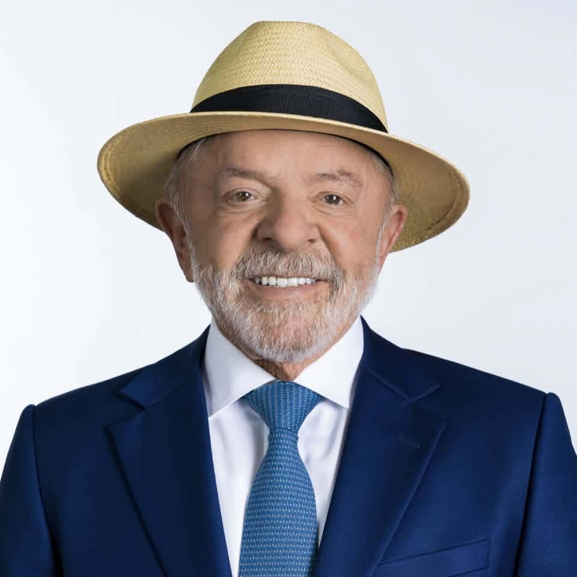

Lula da Silva
PT · 13
Clique para filtrar os resultados.
Política nas Redes · 2026
13 a 19 de setembro de 2026.
Candidaturas acompanhadas
Pesquisas apontam para a crescente personalização da política nas democracias contemporâneas, marcada pelo enfraquecimento dos partidos e pela centralidade de lideranças individuais. Nesse contexto, o personalismo eleitoral refere-se às estratégias usadas por lideranças políticas para se diferenciar, por meio de atributos pessoais ou de elementos coletivos, como propostas programáticas (Luján e Acosta y Lara, 2024).
Estudos indicam que os eleitores acompanham pouco os planos de governo e obtêm informações por diferentes meios, como televisão, jornais e plataformas digitais. Com a expansão das mídias sociais as campanhas tonaram-se mais personalizadas.
Portanto, considerando a tendência de personalização das campanhas digitais e a importância das mídias sociais para o acesso às propostas e o debate público. Este estudo investiga, no contexto brasileiro, em que medida as candidaturas utilizam o Instagram para divulgar seus programas de governo ou enfatizar seus atributos pessoais.
A unidade de análise desta pesquisa é cada postagem realizada pelos candidatos à Presidência da República no Brasil, feitas em seus perfis oficiais no Instagram. 20% das postagens mais curtidas foram categorizadas por meio do modelo de linguagem GPT-5.6 Luna (LLM) e posteriormente submetidas à validação por pesquisadores humanos. A partir de categorias que emergem da literatura.
O Instagram foi selecionado por ser a plataforma em que os candidatos possuem maior número de seguidores. Enquanto, os candidatos foram selecionados conforme a intenção de voto alcançada nas pesquisas eleitorais oficiais no período de análise. Foi determinado o alcance mínimo de 2% ou mais de intenção de voto. Acessar a pesquisa.
Orientada por categorias derivadas da literatura, a análise distingue entre apelos individuais, associados ao conteúdo personalista, e apelos coletivos, relacionados ao conteúdo programático.
Emergentes e sustentadas pela literatura, são elas: Propostas e Soluções, Mobilização Política, Pautas e Problemas Públicos, Prestação de Contas, Identidade, Competência, Relações Pessoais e Interpessoais e Campanha Negativa.
Imagens, vídeos e conteúdos produzidos por IA são registrados na base.
Selecione um ou mais candidatos para visualizar a distribuição das postagens programáticas e personalistas no período.
Selecione os candidatos que deseja comparar. Os resultados são separados entre subcategorias de conteúdos programáticos e personalistas para facilitar a leitura.
Temas e propostas associados ao conteúdo programático.
Temas associados aos atributos e características pessoais.
Cada ponto representa a quantidade de curtidas da postagem.
Cada ponto representa a quantidade de comentários da postagem.
Quantidade de curtidas por subcategoria ao longo do período.
Quantidade de comentários por subcategoria ao longo do período.
Sem seleção, o ranking mostra todos os candidatos. Marque uma ou mais para comparar apenas os candidatos escolhidos.
As 10 postagens com maior número de curtidas na base.
As 10 postagens com maior número de comentários na base.
Distribuição dos formatos das postagens conforme a classificação da base.
A análise das publicações no Instagram entre 13 e 19 de setembro evidencia uma mudança na distribuição e no desempenho dos conteúdos em comparação com o período anterior. Das 53 publicações coletadas, 52 estão classificadas em categorias e subcategorias, sendo 27 conteúdos programáticos e 25 personalistas. Apesar da ligeira predominância numérica dos conteúdos programáticos, os conteúdos personalistas registraram maior engajamento médio no recorte, especialmente em curtidas e comentários.
Lula manteve a maior concentração relativa em conteúdos programáticos, com 9 das 16 publicações classificadas nessa categoria. Suas captions apresentam forte presença de Propostas e Soluções, com temas como Bolsa Família, Farmácia Popular, tratamento da obesidade, atendimento oncológico e debate sobre as bets. Também aparecem Mobilização Política, Identidade e Relações Pessoais e Interpessoais. A comunicação programática associa as propostas à ideia de continuidade e ampliação de políticas públicas, enquanto a Identidade recorre a elementos como legado, trajetória e vínculo simbólico com o povo brasileiro. A Campanha Negativa também ganha espaço, sobretudo em publicações que apresentam Flávio Bolsonaro ou a família Bolsonaro como contraponto político. Entre as publicações de maior engajamento, destaca-se a caption sobre “fome, desemprego e uma crise sanitária sem precedentes”, classificada como Campanha Negativa, que alcançou 1.118.466 curtidas e 46.736 comentários.
Augusto Cury distribuiu suas publicações entre 5 conteúdos personalistas e 4 programáticos. Nos conteúdos personalistas, as captions concentram Campanha Negativa, Relações Pessoais e Interpessoais, Competência e Identidade. O candidato recorre à resposta direta a adversários, à apresentação de sua trajetória e competência e à construção de proximidade com a audiência. A dimensão programática aparece em temas como polarização, defesa de propostas e mobilização de grupos sociais. Seus conteúdos programáticos registraram média de 85.338 curtidas e 6.420 comentários, contra 49.910 curtidas e 3.503 comentários nos personalistas.
Flávio Bolsonaro apresentou novamente uma comunicação inteiramente concentrada em conteúdos personalistas, com as 4 publicações classificadas no período pertencentes a essa categoria. As captions articulam Campanha Negativa, Relações Pessoais e Interpessoais e Competência. O confronto com Lula e com o campo petista aparece de forma explícita, enquanto a Competência é associada à capacidade de promover mudanças e colocar o país em ordem. As Relações Pessoais e Interpessoais aparecem em registros de campanha e na aproximação com apoiadores. As quatro publicações alcançaram média de 581.428 curtidas e 43.558 comentários.
Ronaldo Caiado apresentou predominância ainda mais acentuada de conteúdos programáticos, com 7 das 8 publicações classificadas nessa categoria. Suas captions combinam Mobilização Política, Campanha Negativa, Prestação de Contas e Propostas e Soluções. Os conteúdos programáticos estão associados à apresentação de resultados e experiências de governo, como a política de fornecimento de medicamentos em Goiás, além de intervenções sobre gestão e debate eleitoral. A única publicação personalista, classificada como Relações Pessoais e Interpessoais e dedicada ao agradecimento pelo apoio recebido de Pedro Doria, alcançou 15.201 curtidas e 2.926 comentários, sendo o conteúdo de maior engajamento do candidato no período.
Renan apresentou equilíbrio entre as duas categorias, com 8 conteúdos personalistas e 7 programáticos entre as publicações classificadas. No conteúdo personalista, predominam Campanha Negativa e Relações Pessoais e Interpessoais, além de Competência e Identidade. As captions são frequentemente curtas e confrontativas, reforçando uma comunicação de resposta e enfrentamento. Entre os conteúdos programáticos aparecem Pautas e Problemas Públicos, Mobilização Política, Propostas e Soluções e Campanha Negativa. A publicação “Sobrou NADA.”, classificada como Pautas e Problemas Públicos, alcançou 173.278 curtidas e 9.342 comentários, enquanto a publicação de Competência “É oficial…” obteve 135.213 curtidas e 4.564 comentários.
Em termos comparativos, Lula combinou forte presença de Propostas e Soluções com Campanha Negativa, construindo uma comunicação programática vinculada a políticas públicas, resultados e continuidade; Cury dividiu sua estratégia entre propostas, mobilização, identidade e respostas aos adversários, com desempenho elevado nos conteúdos programáticos; Flávio Bolsonaro manteve uma comunicação concentrada em conteúdos personalistas, sobretudo Campanha Negativa e Competência; Caiado priorizou conteúdos programáticos relacionados a resultados, gestão e mobilização; enquanto Renan combinou confronto e construção da própria imagem, alternando conteúdos programáticos e personalistas em proporções próximas.
Considerando as médias gerais das categorias, os conteúdos personalistas registraram 219.754 curtidas e 13.798 comentários por publicação, contra 154.894 curtidas e 8.063 comentários dos conteúdos programáticos. Os personalistas apresentaram, portanto, médias aproximadamente 41,9% superiores em curtidas e 71,1% superiores em comentários. A diferença é influenciada principalmente pelas publicações de Flávio Bolsonaro e por conteúdos de Lula com elevado volume de interação.
Entre as subcategorias, Campanha Negativa apresentou as maiores médias de engajamento do período, com 277.575 curtidas e 16.552 comentários por publicação. Na sequência aparecem Propostas e Soluções, com 192.068 curtidas e 11.477 comentários; Relações Pessoais e Interpessoais, com 187.872 curtidas e 11.948 comentários; e Competência, com 185.074 curtidas e 11.659 comentários. Identidade alcançou média de 189.573 curtidas e 7.859 comentários. Mobilização Política registrou média de 41.555 curtidas e 1.677 comentários, enquanto Prestação de Contas apareceu em apenas uma publicação, com 11.994 curtidas e 444 comentários.
Os rankings das publicações de maior interação reforçam a presença do confronto e da construção personalista. Entre as dez publicações mais curtidas, 7 são personalistas e 3 programáticas; entre as dez mais comentadas, 6 são personalistas e 4 programáticas. Campanha Negativa aparece em 4 das dez publicações mais curtidas e em 4 das dez mais comentadas. Propostas e Soluções também apresenta presença relevante, especialmente nas publicações de Lula.
Quanto aos formatos, Sidecars apresentaram a maior média de curtidas, com 272.196 por publicação, seguidos por imagens, com 216.560, e vídeos, com 170.145. Em comentários, as imagens alcançaram média de 13.721, seguidas pelos Sidecars, com 13.009, e pelos vídeos, com 10.227. O conteúdo produzido por IA apareceu uma única vez, com 5.766 curtidas e 647 comentários, não permitindo comparação consistente com os demais formatos.
No recorte analisado, portanto, os conteúdos personalistas apresentaram maior engajamento médio, apesar de serem numericamente ligeiramente inferiores aos programáticos. A maior concentração de interação ocorreu sobretudo em Campanha Negativa, Relações Pessoais e Interpessoais, Competência e Identidade, enquanto os conteúdos programáticos permaneceram relevantes, especialmente nas publicações de Lula e Cury sobre Propostas e Soluções. A análise das captions indica, assim, que os maiores níveis de interação estiveram frequentemente associados à combinação entre posicionamento político, confronto com adversários e elementos de identificação pessoal ou de campanha.